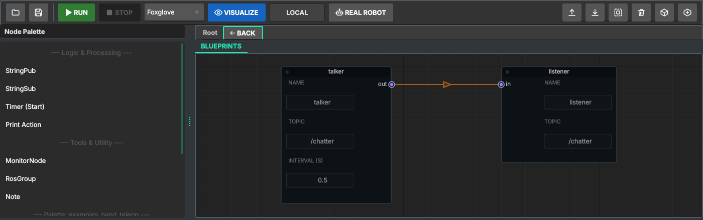
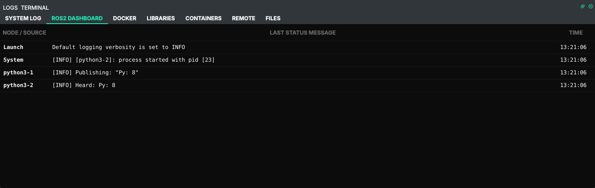

2. Publisher and subscriber (Python)¶
Official tutorial: Writing a simple publisher and subscriber (Python)
What the official tutorial does¶
Two nodes in one package. minimal_publisher creates a publisher on the topic topic and a 0.5 s
timer; on every tick it publishes a std_msgs/String "Hello World: N". minimal_subscriber
subscribes to the same topic and logs what it hears. They know nothing about each other: ROS
connects them because they use the same topic name and message type.
In Studio¶
Start from the Python project of chapter 1.
- From the Node Palette drag StringPub and StringSub onto the canvas.
- Fill the fields on the nodes:
| Node | Name | Other fields |
|---|---|---|
| StringPub | talker |
Topic: /chatter, Interval (s): 0.5 |
| StringSub | listener |
(Topic is set by the wire in the next step) |
Name is the ROS node name (what ros2 node list shows); the file on disk is named after the
node's title on the canvas.
3. Connect out of talker to in of listener. The subscriber takes the publisher's
topic: the System Log says 'listener' now uses topic /chatter (wired to 'talker').
4. Run. Studio saves, starts the session container and launches the nodes.

The output is on the ROS2 Dashboard tab: one row per process with its last message; double-click a row for its whole log.

talker prints Publishing: "Py: 0", listener prints Heard: Py: 0, twice a second.
Python nodes appear as python3-1, python3-2: these are launch's process names, numbered in the
order of the launch file (talker, then listener here).
What Studio generated¶
src/python/talker.py (comments trimmed), the official publisher with other names:
class talker(Node):
def __init__(self):
super().__init__('talker')
self.pub = self.create_publisher(String, '/chatter', 10)
self.timer = self.create_timer(0.5, self.timer_callback)
self.i = 0
def timer_callback(self):
msg = String()
msg.data = f"Py: {self.i}"
self.pub.publish(msg)
self.get_logger().info(f'Publishing: "{msg.data}"')
self.i += 1
src/python/listener.py is the official subscriber: create_subscription(String, '/chatter',
self.callback, 10) and a callback that logs Heard: .... src/launch/project_launch.py starts both
files.
Topics, wires and the Topic field¶
ROS does not know about the wire. It connects a publisher and a subscriber when their topic names and message types match, and Studio writes the Topic field into the code. The wire keeps the fields in step:
- connecting a wire gives the subscriber the publisher's topic;
- changing a publisher's topic changes it on every node wired to it;
- if wired nodes still end up with different topics (you edited the subscriber's field), Save warns in the System Log: 'talker' and 'listener' are wired but use different topics.
Nodes without a wire talk too, as long as the topics match: that is how ROS works, the wire is for you.
Your code stays yours¶
Double-click a node to open its file in your editor. As long as the code is Studio's unchanged
template, Studio fills in the names from the node's fields on Save. Once you edit it, your version
is kept, and from then on the code decides, not the fields: the ROS node name is whatever
super().__init__(...) says, the topic is whatever create_publisher says.
Variant: exactly the official publisher¶
- Double-click
talkerand replace the whole file with the tutorial'spublisher_member_function.py. - In it, change the topic
'topic'to'/chatter', the onelistenersubscribes to. - Run. The dashboard shows
Publishing: "Hello World: 0"andHeard: Hello World: 0;ros2 node listnow shows/minimal_publisherinstead of/talker, the name from the code.
Check it like the official tutorial¶
The official tutorial checks the result with ros2 topic echo. The session container is a normal
ROS 2 environment, so the same commands work there:
docker exec -it ros2_orchestrator_session bash
source /opt/ros/humble/setup.bash
ros2 node list # /listener /talker
ros2 topic list # /chatter /parameter_events /rosout
ros2 topic echo /chatter
What you learned¶
| Concept (official tutorial) | Where it is in Studio |
|---|---|
publisher, create_publisher(type, topic, qos) |
StringPub node, Topic field |
timer, create_timer(period, callback) |
StringPub node, Interval field |
| subscriber and callback | StringSub node, callback in its file |
| nodes are matched by topic name and type | the Topic fields; the wire keeps them equal |
setup.py entry points, ros2 run |
not used: the launch file runs the scripts (chapter 1) |
Next: the same pair in C++, chapter 3.